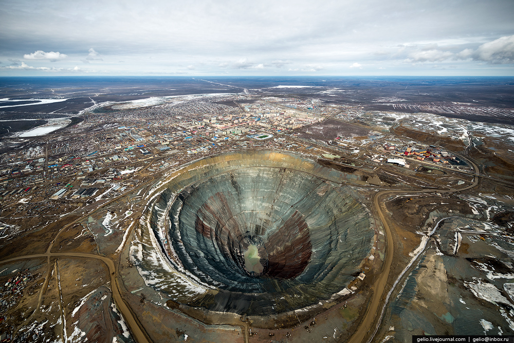
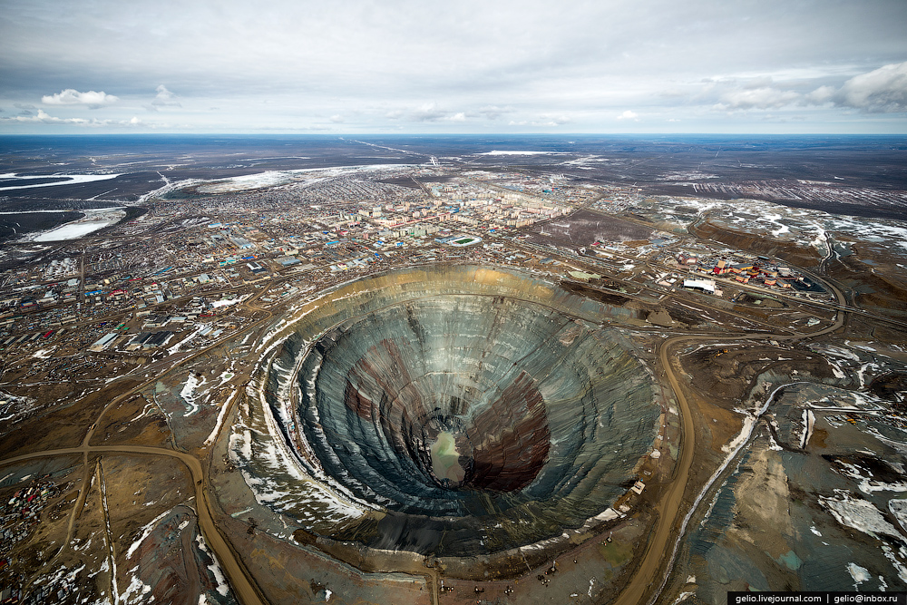

Кимберлитовая трубка «Мир» — коренное месторождение алмазов, открытое в 1955 году. Данное месторождение алмазов стало вторым коренным месторождением алмазов в Якутии после открытия в 1954 году первой в Советском Союзе кимберлитовой трубки «Зарница» геологами Н. Н. Сарсадских и Л. А. Попугаевой но первой начала разрабатываться трубка «Мир». Месторождение разрабатывалось вначале открытым способом, а затем по мере углубления карьера постепенно разработка перешла на подземный способ добычи алмазов.